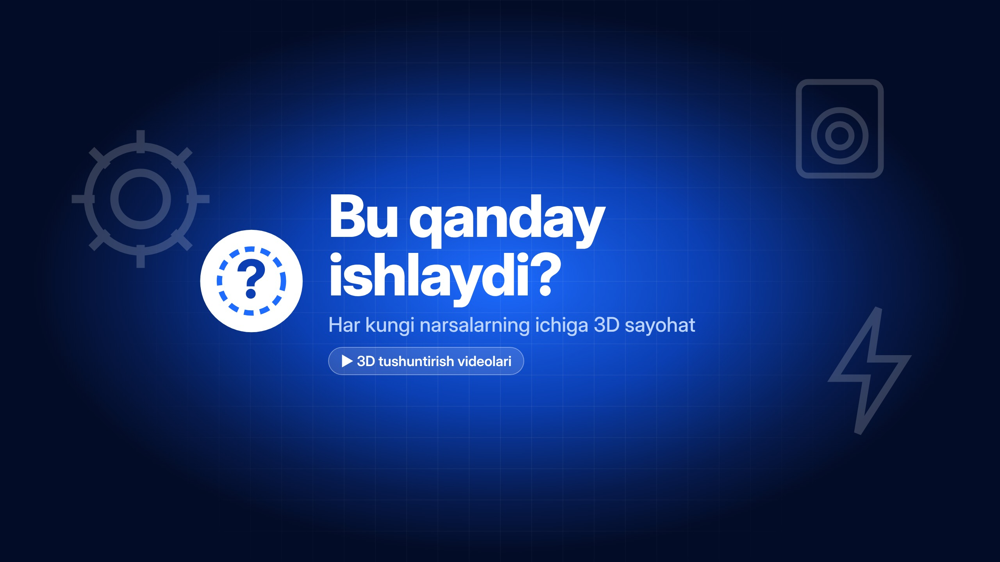

YouTube rasmlari
«Yuklab olish» tugmasini bosing. Ishlamasa — rasm ustiga barmoqni bosib turing → «Rasmlarga saqlash».
Banner — 1024×576

Banner — 2560×1440
Profil rasmi — 800×800
«Yuklab olish» tugmasini bosing. Ishlamasa — rasm ustiga barmoqni bosib turing → «Rasmlarga saqlash».
